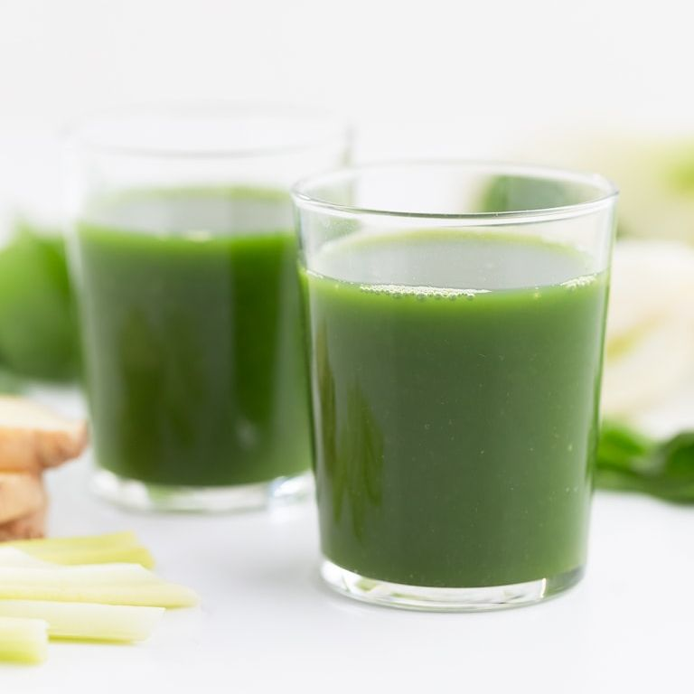
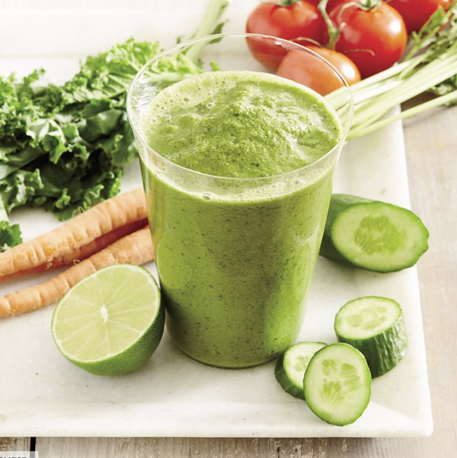
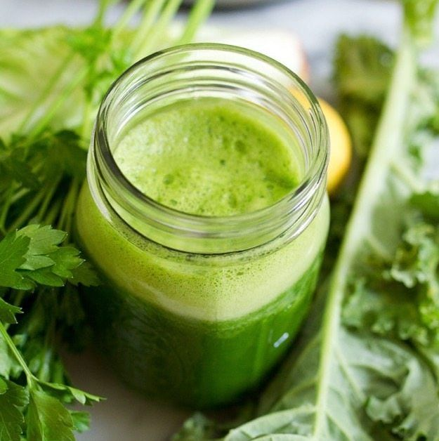
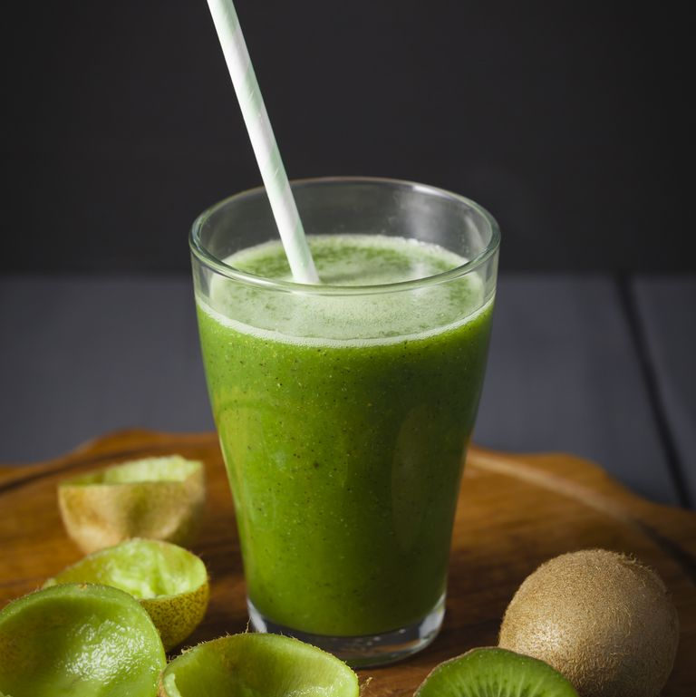
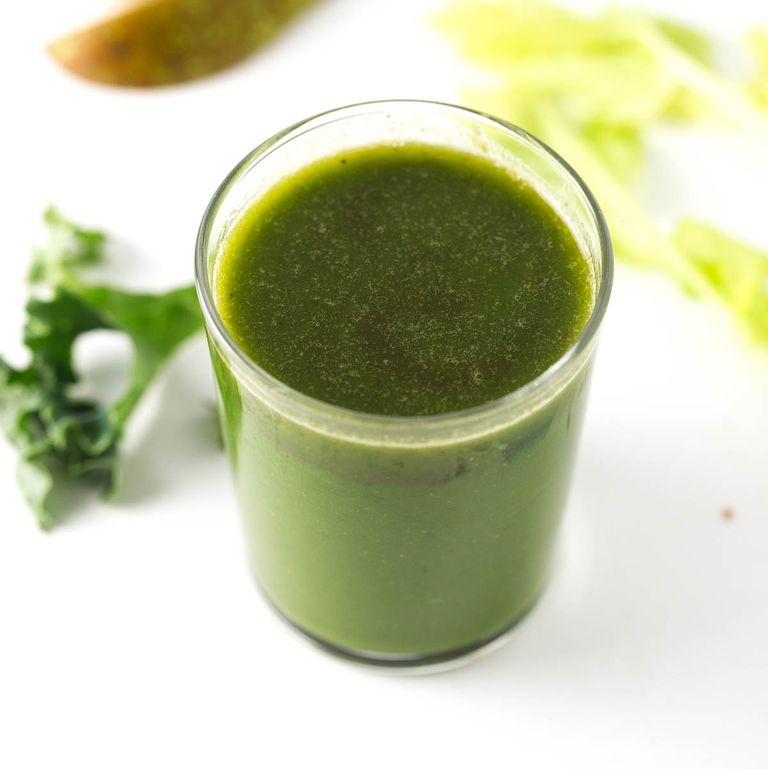
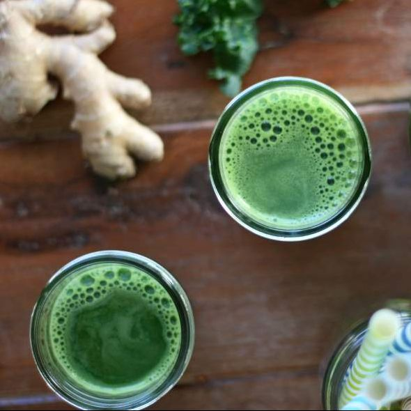
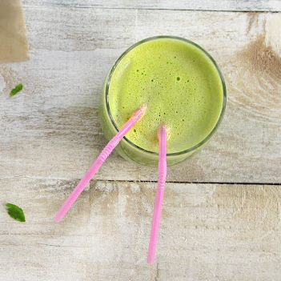
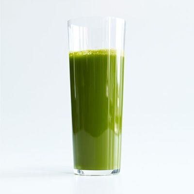
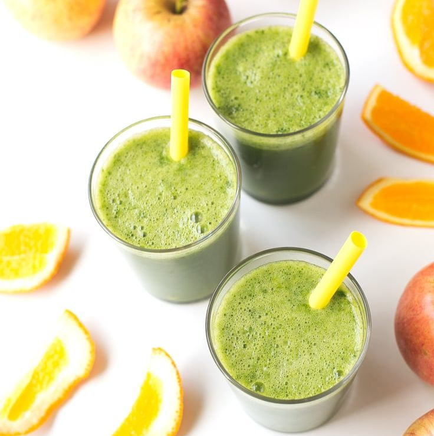

Sugiuchi

Kale a little too intense for you? Sugiuchi also loves spinach, which contains many of the same
nutrients A, C, K, and B6
Gazpacho Smoothie

In this leafy greens-packed recipe, powerful nutrients taste delicious. Kale is chock-full of vitamins
A, C, K, and B6
Green Juice

Technically a smoothie, this plant-powered blend has a lighter consistency if you want something a
little more filling
Green Cleanse

You’ll use a blender instead of a juicer for this recipe, but the result is much closer to the little more filling
Digestive Aid

We all feel bloated every once in a while. This vegan juice is the perfect antidote, packed with
anti-inflammatory ingredients
Zingy Ginger

For another ginger-forward recipe that’s great for digestion, try this five-ingredient juice that goes
all-in on the root.
Zingy Juice

We all need a break from leafy greens every once in a while. That’s where this celery-apple juice comes
in—it’s sweet, light
Cilantro Juice Punch

This recipe is only for the cilantro lovers of the world—it gets most of its color from an entire bunch
of the greens.
Four-Ingredient

Kale, spinach, and romaine aren’t the only greens you can use for your juice. Why not try Swiss chard?
This easy juice